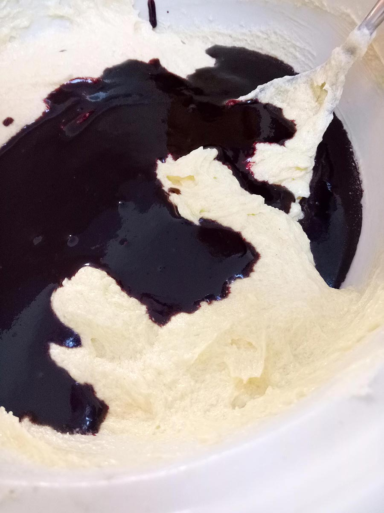
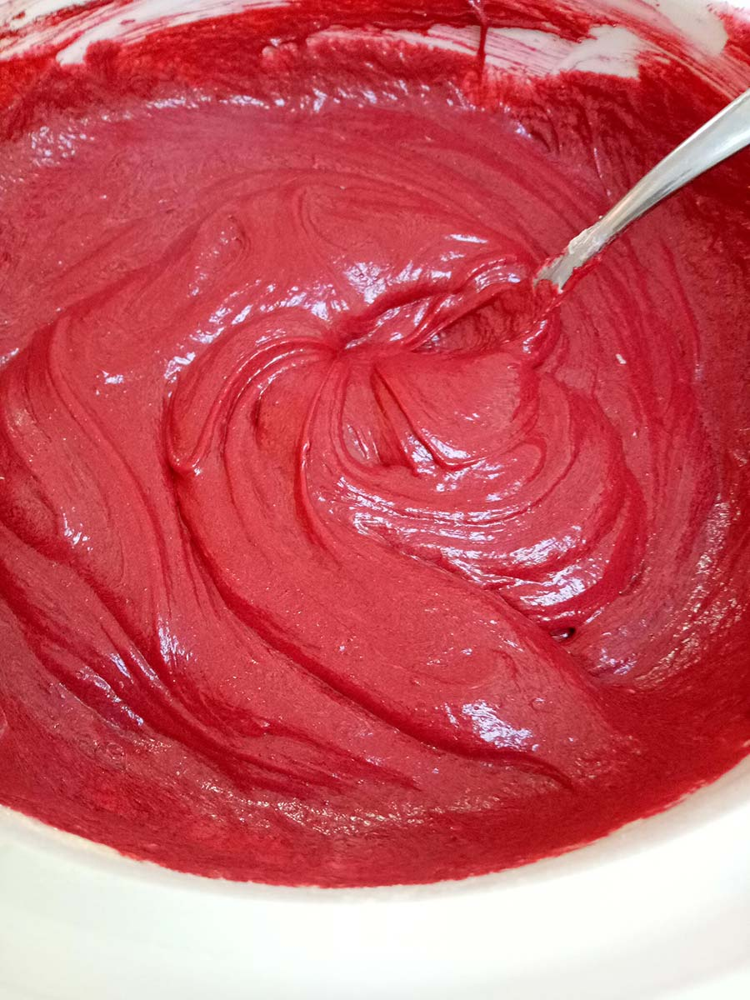
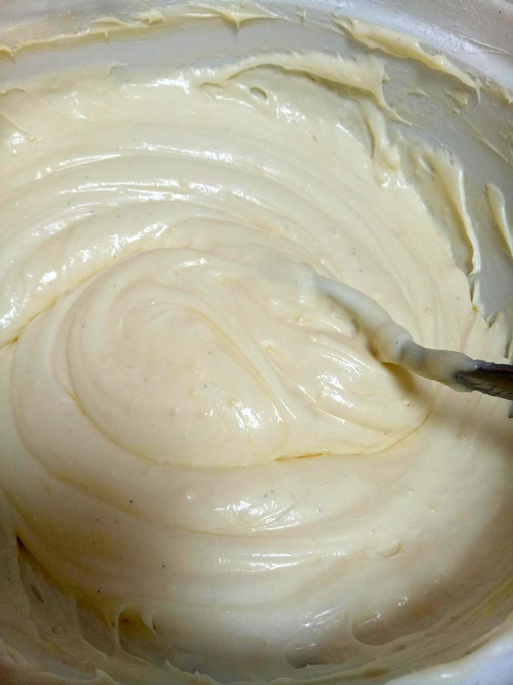
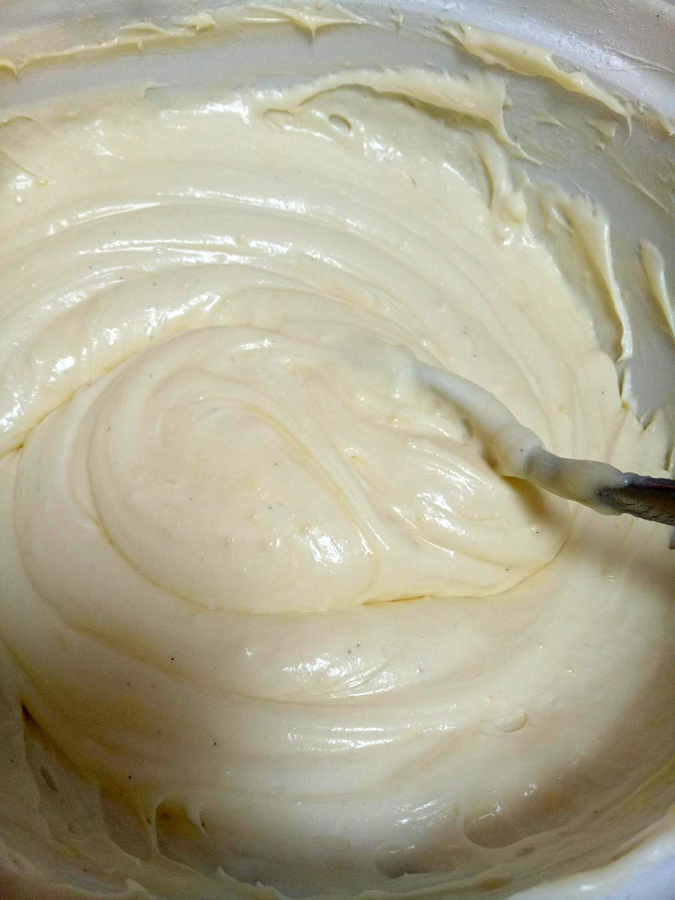

Red velvet cakes are great whether it's a party or taking a break and watching Netflix. It's healthy because it isn't made of chocolate even though it tastes very similar, so those midnight snacks are acceptable now. Kids love red velvet cakes too, due to it tasting good and being extremely colourful.
Heat the oven to 350°F, 170°C. Lightly grease the cake pan using butter or nonstick oil spray and lightly dust using 1 tablespoon of the cocoa powder.

Cream the butter and sugar together until light and fluffy.

Add eggs one at a time, beating well after each addition to combine well.
 In another bowl, mix together oil, the remaining cocoa powder, the red food colouring and vanilla until smooth. Stir colour mixture and vinegar through the creamed sugar mixture to combine. Put these images beside each other.

Sift together the flour, baking soda and salt into a seperate bowl. Add half of the dry ingredients and half of the buttermilk to the wet ingredients and mix. Repeat with the remaining dry ingredients and buttermilk.

The cake mixture is now finished.


Pour the batter into the prepared pan and bake for 25 to 30 minutes, or until a toothpick inserted into the centre of the cake comes out clean.
Take the cake out of the oven and wait let it cool down on a wire rack completely.

Take the cake out of the tin.
 

Beat together the cream cheese butter and vanilla until smooth and lighter in colour (3 to 4 minutes). Beat in icing sugar until the frosting is light and fluffy, if the icing is not thick enough then add some more icing sugar and beat until the icing is the desired consistency.
Optional if using mix in the lemon juice.